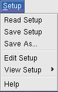
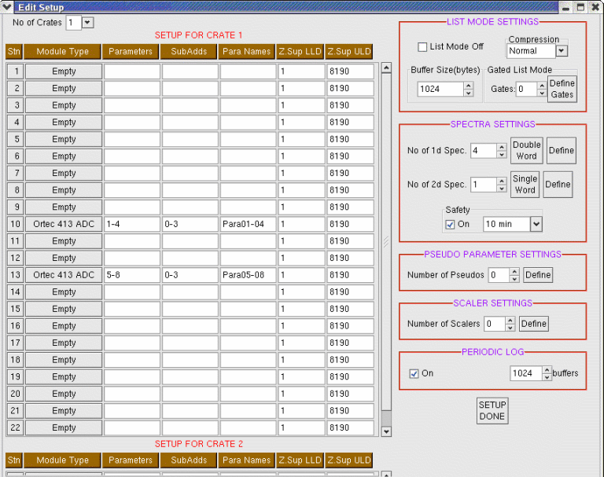
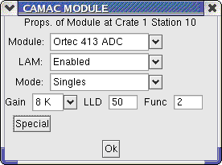
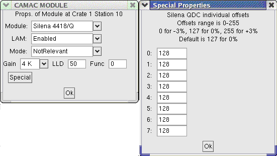
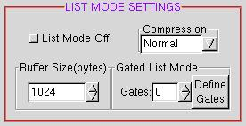
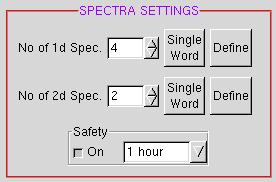
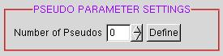
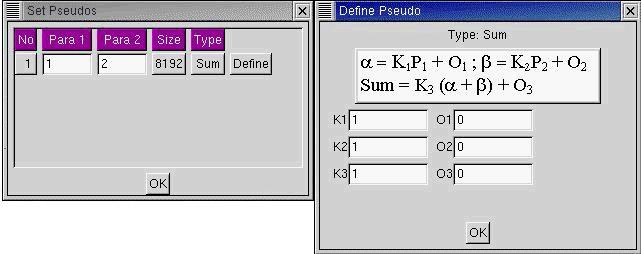
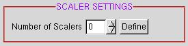

 |
SETUP |
Read Setup: Reads a previously saved setup file.
Save Setup: Saves the current setup (overwriting the file it was read from).
Save As...: Saves the current setup with a specified file name.
Edit Setup: Prepares the setup, both for online acquisition and offline analysis. For offline analysis one can start with the same setup file that was used for acquisition or make a new one. Actually the setup for offline analysis can be simplified realising that CAMAC details are not required. We first explain setup for online acquisition.

This is for a single crate setup. When there are two crates a similar interface appears for two crates. The description given here is for 1 crate only. For two crates, the CAMAC modules and parameters should be defined in both crates. The settings for List Mode, Spectra etc are similar for 1 or 2 crates.
The first column indicates CAMAC stations. These are numbered 1-23. The modules placed in these positions are indicated in the second column. Some of the modules (e.g. the ORTEC AD413A ADC) are double-width modules. In this case the module must be shown at the correct station number, leaving the other station "Empty". For the ORTEC AD413A ADC, if the module has been placed at CAMAC stations 9-10, then it should be shown to occupy station 10 (see the ORTEC mannual for further information about the ADC). To indicate a module at a given station, click in the "Module Type" column and a dialog box opens up:

Here one can setup up the module. The following module types are available:
| Name | Inputs | Resolution | Comment |
| Empty | - | - | - |
| Ortec 413 ADC | 4 | 8K | Spectroscopy quality |
| Ortec 811 ADC | 8 | 2K | Please set the resolution as 4K instead of 2K to avoid roll back of spectra |
| LeCroy ADC/QDC | 12 | 2K | negative input 0-2V |
| BARC CM60 | 4 | 4K | Available from ELD, BARC |
| Phillips TDC (or QDC) | 16 | 4K | - |
| CAEN TDC | 4 | 4K | - |
| Silena 4418/Q | 8 | 4K | Use Special button |
| BiRa Bit Register | 12 | 12-bit | click for details |
| Unknown | Any | Specify | For any module not defined above. Prepare ini and clr files manually. |
CAMAC modules not listed above can be incorporated. Please send me an email.
The following properties of the modules should be set:
Lam Enabled/Disabled: LAM (CAMAC Look At Me) is the trigger generator.
In all coincidence setups one and only one CAMAC module must have LAM enabled in each crate.
All other modules should have LAM disabled.
If there are several modules, on which module should we enable LAM? LAM should be enabled on the
slowest module, e.g. if an ORTEC 811 (80 micro-second conversion time) is used along with ORTEC 413
(6 micro-sec per input conversion time), LAM should be enabled on the slow ORTEC 811. If all the
ADCs have the same conversion time, LAM should be enabled on the ADC corresponding to parameter
no. 1 (the left most in the crate).
In a singles setup employing multiple AD413 ADCs, all the ADCs should have LAM enabled and should
be set in singles mode.
NOTE THAT SINGLES MODE OPERATION OF THE AD413 IS NOT RELIABLE AND THE ADCs SUDDENLY STOP ESPECALLY AT HIGH COUNTING RATES.
Mode: Coincidence/Singles/Test/Not Relevant. The mode Coincidence/Singles is relevant only for the AD413. "Coincidence" is the usual mode of operation for which a master gate signal must be input to the ADC. In "Singles" mode the ADC operates without a master gate. For other ADCs "Not Relevant" is the appropriate choice. Some modules (e.g. the Phillips TDC) also have a "Test" mode in which the module generates output without any input. This mode would not be used except for tracing faults.
Gain: Do not change these values. LAMPS knows the ADC gains of all the modules and sets it up correctly.
LLD: The ORTEC 413 and BARC CM60 have LLD values which can be set via CAMAC commands. LAMPS displays the common LLD settings by default and rarely would one like to change them.
Func: This is the CAMAC function code for reading the module. The value will be either 0 or 2 depending on the module. LAMPS knows the required value and shows this as the default. (Do not change this value.)
Special: This button is to define some extra features. At present it is used only for the
Silena QDC where the offsets of individual inputs can be adjusted.

Q:But I still find .ini and .clr files in my directory!
A:LAMPS generates these files based on the setup. For normal use you need not bother about
these files. In unusual circumstances (e.g. using an "Unknown" CAMAC module) it is required to
edit these files directly.
We now explain the entries in the next 3 columns "Parameters", "SubAds", "Para Names".
"Parameters" refer to the parameter numbers. In the example illustrated (which is also the default
setup), parameters 1 to 4 are located in the ORTEC 413 ADC at Station 10. The corresponding CAMAC
sub-addresses are 0 to 3 (CAMAC sub-address refers to the multiple inputs of the ADC. The ORTEC 413
is a quad ADC and the sub-addresses are 0-3). In the next coulumn are the names to be given to the
parameters. In this case the parameters will be named "Para01", "Para02", "Para03" and "Para04". Note
that we specify only "Para01-04" in this case rather than "Para01-Para04". Here are some more
examples:
| Stn | Module Type | Parameters | SubAdds | Para Names |
| 3 | Phillips TDC | 7-15 | 0-8 | Clover_T01-09 |
Here a Phillips TDC is located at Station 3. Parameters 7 to 15 are defined corresponding to sub-addresses 0 to 8 and the names of the parameters are "Clover_T01", "Clover_T02" etc.
Note that the same setup can be simplified as follows:
| Stn | Module Type | Parameters | SubAdds | Para Names |
| 3 | Phillips TDC | 7-15 | 0 | Clover_T01 |
Here the full range of values in the columns SubAdds and ParaNames is not supplied but LAMPS understands the intention, going by the range of values in the "Parameters" column.
Another example:
| Stn | Module Type | Parameters | SubAdds | Para Names |
| 7 | Ortec 413 | 1-2,3-4 | 0,2 | E1,DeltaE1 |
This example illustrates the use of commas. The explanation is:
| Para | Name | SubAdd |
| 1 | E1 | 0 |
| 2 | E2 | 1 |
| 3 | DeltaE1 | 2 |
| 4 | DeltaE2 | 3 |
To avoid confusion, after completing setup, take a look at View Setup - Parameter List (described below)
What about offline setups? Here the hardware details are unimportant except for the ADC resolution.
Consider the data from an experiment with 24 Clovers having 24 Time parameters (resolution 4096) and
96 Energy parameters (ADC resolution 8192). For offline analysis, the details of the CAMAC setup are
unimportant so we can keep the parameters on "Empty" modules. All that is necessary is to make two
groups:
| Stn | Module Type | Parameters | SubAdds | Para Names |
| 1 | Empty | 1-24 | 0 | Clover_T1 |
| 2 | Empty | 25-120 | 0 | Clover_E1 |
Note: The data for this experiment would have been taken on a multi-crate system. But we are not concerned with these details for off-line analysis.
The last two columns in the Setup table are Z.Sup LLD and Z.Sup ULD. The values entered here are relevant only when acquiring list mode data. If you are acquiring only spectrum data, dont bother with the values here. For off-line analysis also, the values in these two columns is irrelevant (the data is already supressed, to read it back we dont need to know the Z.Sup LLD and ULD values).
The LLD and ULD values entered here are utilized by the zero supression scheme (Refer to the section List Mode File Formats for details. Z.Sup LLD and ULD are very important in reducing the size of the list mode file. Any parameter not within the range [LLD-ULD] specified here is considered "Zero" and supressed (not written in the list mode file). Why do we need ULD? This is because e.g. a time channel goes to the full scale value when a "start" pulse is present and "stop" pulse absent.
The right side of the Edit Setup window has 4 panels entitled List Mode Settings, Spectra Settings, Pseudo Parameter Settings and Scaler Settings. We describe these below:
LIST MODE SETTINGS

The first button toggles list mode on/off.
The second buton, "Compression" decides the file format to be used both for writing the list mode file and for analysis. The file formats are "Normal", "Advanced" and "Freedom". "Normal" is the usual zls format used in the earlier programs ACQ and AMPS. "Advanced" is a new Group Suppression Format and "Freedom" is the format used by the CANDLE and FREEDOM programs at NSC, New Delhi.
(As of 15 October 2002, we have not yet implemented writing in formats other than zls, but read back of data in the group suppression format and NSC Freedom format has already been implemented).
List file formats are explained in a separate section.
The next button is to set the buffer size. This is the size of the data block in bytes and is important even if list mode is off. The size to select depends upon the data rate. When the data rate is high, large buffer sizes should be used (maximum is 16384 bytes) and lower values should be used when the data rates are lower. LAMPS will automatically round off the entered value in multiples of 2*(No. of Parameters). For example if you select a buffer size of 0 (zero), and there are 8 parameters, LAMPS will correct the value to 16 bytes.
Gated List Mode is an advanced facility. In normal use, it is switched off by setting the
Gates value to 0 (zero). Gated list mode allows the user to apply sofrware conditions event-by-event
which need to be satisfied for the data to be written to the list mode file. Rejecting events
in this manner leads to reduction in the size of the list file. Consider an experiment studying
particle gamma coincidences. The particle detector sees also elastic scattering events for
which the event rate is high, leading to a lot of random events. These are partly rejected by
hardware, but suppose the rejection is not perfect. By applying software gates we can further
cleanup the data. In order to use this facility, the number of Gates is specified (upto 10)
and then clicking on "Define Gates" brings up a table in which we set the thresholds for the
parameters. All the gates must test TRUE for the event to be accepted i.e. the gates
are applied in AND condition.
Q:Do these consderations apply for the spectra also?
A:No! And this has been a mis-understanding for some users. The spectra are built independent
of the Z.Sup LLD, ULD values and independent of the gates defined in Gated List Mode. If you make
an error in defining the Z.Sup LLD and ULD values, then during acquisition you may not notice anything
unusual in the displayed spectra, however when you re-build the spectra offline they will look
different.
Q:But I want to apply gates on the spectra also.
A:For this, gates can be put while defining the spectra (see below).
SPECTRA SETTINGS

After selecting the number of 1d and 2d spectra, the next step is to click the buttons marked "Single Word" which can be toggled to "Double Word". The settings Single/Double Word are applied separately for 1d and 2d spectra. However all the 1d spectra must be of the same word size and all the 2d spectra must be of the same word size. With Single Word setting the counts at any channel will overflow (go to zero and then start increasing again) after reaching 65535. So if one expects large counts one should change to Single Word. For 2d spectra it is rather unlikely to expect overflows and Single Word is usually sufficient.
After these settings have been made, by clicking the "Define" button for 1d spectra settings are to be made in the following tabular form:
| No | Para | Spec. Size | No of 1d Gates | Condition | Define 1d Gates | No of 2d Gates | Condition | Define 2d Gates |
| 1 | 1 | 1K | 0 | AND | Define | 0 | AND | Define |
Here the second column is the parameter number for which the spectrum is to be built,
the spectrum size can be selected as 8K, 4K, 2K, 1K, 512, 256, 128, 64, 32 or 16. In the next column
one can enter the number of 1d gates to be applied if building gated spectra. In this case
by clicking the corresponding "Define" button, a window appears where a number of gates can
be defined by specifying the parameter number and threshold values. The Condition can be set
either to AND otherwise OR. The same procedure applies to 2d gates.
However, in this case after clicking "Define" one has to input the file names of banana gates
which are to be applied. Banana gates are to be previously prepared by first generating
2d spectra without gates and drawing a polygon to mark desired regions.
Note that the Condition setting AND/OR has been given separately for 1d and 2d
gates. The conditions apply independently for all the 1d gates and all the 2d gates and finally
the two conditions are ANDED together.
I have been told that the method in the older program ACOFF of defining a set of 1d gates in general and then selecting them as required while defining various spectra was better. In the present case, if the same 1d gate has to be used for many spectra it is required to type the settings repeatedly. If all the users feel similarly, I will change this interface.
At the bottom of the Define 1d Spectra window there is another dialog:
| No. Range | Para. Range | Size | |
| 1-37 | 1-37 | 2K | Apply |
PSEUDO PARAMETER SETTINGS

Pseudo parameters or virtual ADCs are parameters that can be defined by mathematical relations from the actual parameters. After deciding on the number of Pseudos, clicking on the Define button allows values to be set in the following table:
| No | Para1 | Para2 | Size | Type | |
| 1 | 1 | 2 | 8192 | Sum | Define |
Sum (Sum of two parameters)
Product (Product of two parameters)
Ratio (Ratio of two parameters)
Position (The postion value for position sensitive detectors)
PI (The particle identifier for a telescope)
Multip. (Number of firing detectors)
User (User defined)

In this example, a pseudo parameter will be created whose value will be
K3*(K1*P1+O1+K2*P2+O2)+O3
Notice the "Size" button. It has a similar meaning as ADC gain for real parameters. The user must be careful about the range of values when creating pseudos. For example if two parameters are being added the result may exceed the value of "Size". When this happens, the correspondng spectrum if created will appear truncated. The remedy is to use to use smaller values of the constants, e.g. K3=0.5.
Aside from the standard pseudo parameters defined above, one can have additional user-defined
pseudos. To do this, one has to edit the FORTRAN program user.F, include the definition here
and then compile LAMPS again using the make command. Details about user.F are in
a separate section.
SCALER SETTINGS

CAMAC scalers are very useful to record the beam current, the number of master gates (for dead time
purposes) or any other input. For this, a CAMAC scaler of any make (such as the CAEN 16-channel CAMAC
scaler) can be located somewhere in the CAMAC crate. After selecting the number of scalers (maximum 4)
clicking on "Define" brings up a table:
| No | Name | Stn No | Sub Addr | Function |
Here we can give a useful name for each scaler and enter the CAMC NAF values for reading the scaler. The Station Number, N is the location of the scaler in the CAMAC crate, Sub-Address, A is the channel of the multi-input scaler and the CAMAC Function code, F=0 for all known makes of scalers.
View Setup When acquisition or analysis is in progress it is not permitted to edit the setup. At this time it is possible to View Setup. The different format of this View Setup function shows a short summary of the setup. One use of Setup - View Setup - Parameter List (even if acquisition is not running) is to check if there is any mix-up while definig the parameters. This menu shows a list of parameters along with their names and NAF settings.